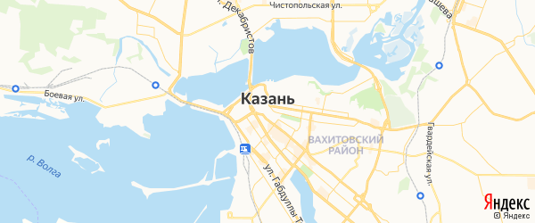
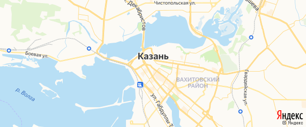

Казань
Каза́нь — город в России, столица Республики Татарстан, крупный порт на левом берегу реки Волги при впадении в неё реки Казанки. Один из крупнейших экономических, научных, образовательных, религиозных, культурных и спортивных центров России. Казанский кремль входит в число объектов Всемирного наследия ЮНЕСКО. Исторически столица (центр) Казанского ханства, Казанского царства, Казанской губернии и Татарской АССР. Город имеет зарегистрированный бренд «Третья столица России». В 2005 году было отпраздновано тысячелетие Казани. Казань неоднократно принимала международные соревнования высокого уровня по различным видам спорта, в том числе XXVII Всемирную летнюю Универсиаду в 2013 году, а также ряд матчей чемпионата мира по футболу 2018 года.

Казань расположена на левом берегу реки Волги, при впадении в неё реки Казанки, в 820 км к востоку от Москвы. Благодаря выгодному географическому расположению, Казань издавна была торговым посредником между Востоком и Западом. Протяжённость города с севера на юг — 29 км, с запада на восток — 31 км. Город в западной, центральной и юго-западной части выходит на реку Волгу на протяжении около 15 км. В Казани имеется один мост через Волгу — у крайней западной границы территории города. Река Казанка протекает с северо-востока на запад через середину города и делит Казань на две соизмеримые по территории части — историческую к югу от реки и более новую заречную к северу. Две части города связаны пятью дамбами и мостами, а также линией метрополитена.
Исторически столица (центр) Казанского ханства, Казанского царства, Казанской губернии и Татарской АССР. Город имеет зарегистрированный бренд «Третья столица России». В 2005 году было отпраздновано тысячелетие Казани. Казань неоднократно принимала международные соревнования высокого уровня по различным видам спорта, в том числе XXVII Всемирную летнюю Универсиаду в 2013 году, а также ряд матчей чемпионата мира по футболу 2018 года.

Казань расположена на левом берегу реки Волги, при впадении в неё реки Казанки, в 820 км к востоку от Москвы. Благодаря выгодному географическому расположению, Казань издавна была торговым посредником между Востоком и Западом. Протяжённость города с севера на юг — 29 км, с запада на восток — 31 км. Город в западной, центральной и юго-западной части выходит на реку Волгу на протяжении около 15 км. В Казани имеется один мост через Волгу — у крайней западной границы территории города. Река Казанка протекает с северо-востока на запад через середину города и делит Казань на две соизмеримые по территории части — историческую к югу от реки и более новую заречную к северу. Две части города связаны пятью дамбами и мостами, а также линией метрополитена.